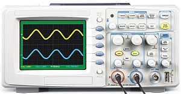
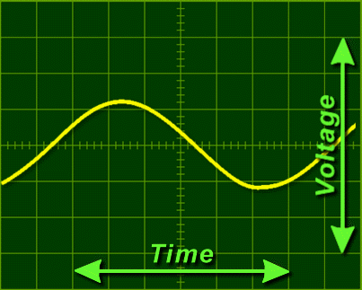
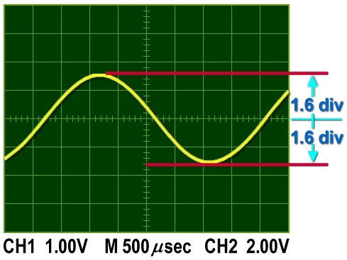
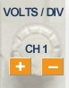
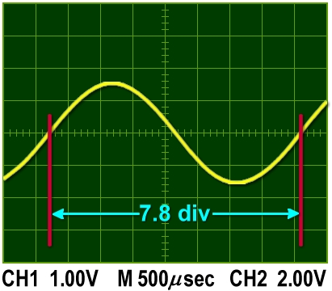
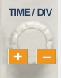
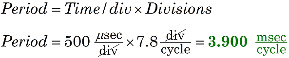
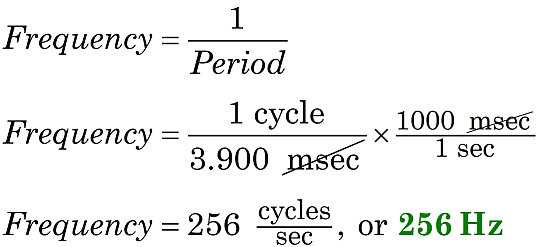

Using an Oscilloscope
|  | |
| Figure 1. Oscilloscopes measure AC voltages. |
|
|  | |
| Figure 2. Oscilloscopes trace voltages that change over time. |
|
|  |  |
| Figure 3. Measuring peak-to-peak voltage with Channel 1 scale of 1.00 volts/div. | |
A voltmeter measures a DC circuit, reporting a value like 5.79 volts in the display. But the voltage in an AC circuit rises and falls like a sine wave: up and down. To measure the characteristics of an AC signal, you need an oscilloscope.
How an oscilloscope works
An oscilloscope sends out a beam that glows on a screen. The beam moves upward for positive voltages, and downward for negative voltages.
And, as the voltages rise and fall, the oscilloscope also sweeps the beam across the face of the screen, from left to right, leaving behind a glowing trace of the changing voltage.
Read the face of an oscilloscope like any graph: counting the number of divisions (or tick marks) and multiplying by the scale for each division. But here you have two scales to interpret: 1) the vertical scale, a measure of voltage in volts (or millivolts or microvolts), and 2) the horizontal scale, a measure of time in seconds (or milliseconds or microseconds).
Reading the vertical scale
Use the vertical scale to determine the magnitude of the AC signal. To measure the "peak to peak voltage," 1) adjust the vertical scale to get the largest image that fits on the screen, 2) count the number of divisions from the bottom to the top edge of the trace, and 3) multiply by the oscilloscope's Volts/div setting.
To measure the wave magnitude, first adjust the volts/div knob to make the wave fit in the screen vertically. In Figure 3 the setting for Channel 1 is 1.00 volts/division. Then, with the wave centered, the peaks extend 1.6 divisions above and below the horizontal axis, spanning a total of 3.2 divisions. Finally, calculate the voltage.

Reading the horizontal scale
|  |  |
| Figure 4. Measuring wave period (time) with Time scale of 500 μsec/div. |
|
To measure the wave period, we adjust the sec/div knob to make one wave cycle fit in the screen horizontally. In Figure 4 the setting is 500 μsec/div. Count the divisions between the two points where the wave rises across the centerline. So, one period of the wave here spans a total of 7.8 divisions. Calculate the length of time for this span of one period.

Calculating wave frequency
The last step in measuring this AC signal is a calculation: convert wave period to wave frequency. The formula for Frequency is just 1 divided by the Period. The main challenge is working with the units. Period is measured in seconds per cycle. Frequency uses the opposite: cycles per second, also known as Hertz (or Hz).

As you become confident, you will more easily convert from periods of milliseconds to frequencies in Hertz and kilohertz.
To learn more about oscilloscopes, visit these helpful web sites: